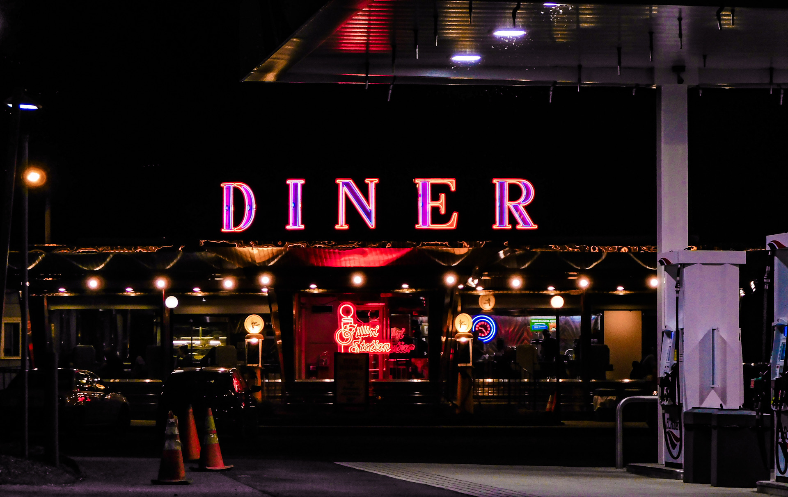
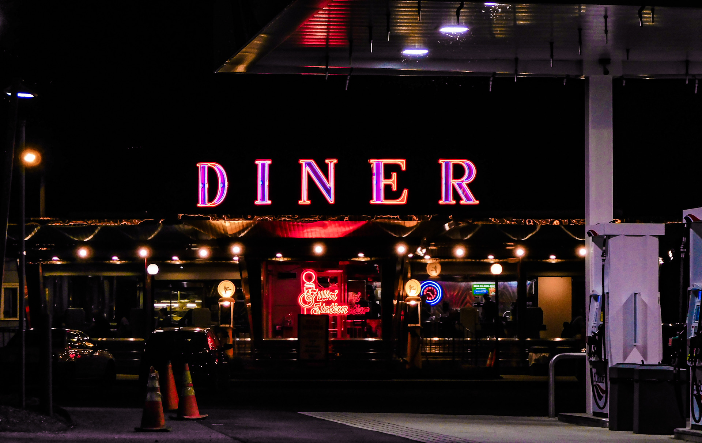

VISUAL STORYTELLER
Albert Escobar
Hello! I'm Noe Alberto Escobar Medina, but I go by Albert for simplicity. I am a creative and driven media production student with a strong background in photography, cinematography, storytelling, and visual arts. My time at Howard Community College has allowed me not only to express my full creativity but also to learn hands-on everything that there is to know about video and audio production. My time at HCC has also allowed me to meet and collaborate with my fellow creative classmates to produce well-made projects, including music videos, interview pieces, and audio works. I have always been passionate about creating impactful and polished work across film and television. I have experience in script writing, music production, and illustration to support a dynamic storytelling vision for all projects I happen to work on. Outside of my pursuit in education related to media, I have a background in management/training and in supervisor roles in relation to a janitorial start-up business run by my parents. Within this venture, I was responsible for training and then supervising new employees and communicating with the owners of the businesses we would clean. I would, at times, take responsibility myself for cleaning the office space within these businesses to ensure our work was of the highest quality.

 
